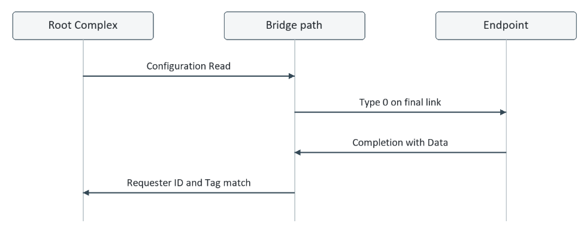

Originally published on LinkedIn. View original article ↗

The link is in L0, its normal operating state, but the endpoint does not appear in lspci, the Linux utility that lists PCI devices. Where did the first Configuration Read stop?
Consider an accelerator behind a PCIe switch. The host connects through a Root Port, a port of the Root Complex that links the processor system to PCIe. The links report the expected speed and width, and Data Link Layer Link Active indicates that the link is active at that layer, where this status is supported. Firmware still cannot discover the accelerator.
Enumeration is the process by which software discovers PCIe Functions and configures their resources. A Function is an independently addressable part of a device with its own Configuration Space. L0 alone does not prove that the intended Function received a request or returned a Completion, the transaction response. Recovery, a link state used for retraining, may also occur during discovery.
Configuration Space contains the identification and control registers used to discover and configure a Function. Reading a DWORD at offset 00h returns Vendor ID in bits 15:0 and Device ID in bits 31:16. A valid response lets discovery continue.
In 0000:03:00.0, the fields are Segment 0000, Bus 03, Device 00 and Function 0. Bus, Device and Function together form the BDF address within a segment. Bus numbers are assigned during enumeration, so this is an illustrative address, not a permanent identity of the card.
ECAM, the Enhanced Configuration Access Mechanism, gives software a memory mapped window into PCIe Configuration Space. The host bridge decodes the processor address into a BDF and register offset, then generates a Configuration Read Transaction Layer Packet, or TLP. For this example, software accesses the ECAM location for 03:00.0 at offset 00h. It is reading configuration registers, not ordinary RAM or the accelerator data registers. No Base Address Register, or BAR, needs to be assigned first; BARs describe the address resources that software will allocate later.

A TLP carries a PCIe request or Completion. Its header describes the operation and routing; its payload carries data when needed. A Configuration Read has no request payload. The register value returns in a separate Completion with Data, usually shown as CplD.
Both Configuration Reads and Configuration Writes are Non Posted requests. They require a Completion. A successful Configuration Write returns a Completion without Data, shown as Cpl. This differs from an ordinary Memory Write, which is Posted and does not receive a transaction Completion.
How the request reaches the correct bus
Enumeration discovers bridges, the routing elements between buses, and programs their bus numbers before scanning further below them. A bridge records its Primary Bus Number on the host side, its directly attached Secondary Bus Number and the highest Subordinate Bus Number reachable below it.
For a target further below a bridge, a Type 1 Configuration Request travels toward the target bus while that bus lies within the forwarding range. When the target matches the bridge Secondary Bus Number, the request is converted to Type 0 for the final bus. A directly attached endpoint can receive Type 0 straight from its Root Port.
Both conventional Type 0 and Type 1 Configuration Request headers contain Bus, Device and Function fields. Type 0 does not remove the Bus Number field. The distinction is the routing behavior: Type 0 is used on the selected final bus and is not forwarded onward as another Type 1 request.
Also keep the packet type separate from the Configuration Space header layout. A bridge has a Type 1 Configuration Space header, but software can access that bridge itself using a Type 0 Configuration Request on the bus where it resides. These two uses of Type 0 and Type 1 describe different things.

A wrong bus range can look like a dead endpoint
In Figure 3, the Root Port must cover Bus 03. Suppose firmware leaves its Subordinate Bus Number at 02. A request targeting Bus 03 will not be forwarded down that path. Depending on the host scan policy, software may never issue that request at all. The endpoint link can remain healthy in either case.
The useful evidence is a missing Type 0 request on the endpoint link together with an incorrect bus range above it. Correct the enumeration or bus allocation problem, then capture the read again. Changing endpoint BARs cannot repair configuration routing, because BAR addresses are not used to route this request.
Vendor ID FFFFh normally means software treats the Function as absent. It is an observation at the software interface, not proof that the endpoint returned a successful packet containing all ones. The host controller can translate different failures into a similar processor read result.
Successful Completion
For the initial full DWORD read, a valid CplD returns Vendor ID and Device ID. Software can then inspect Header Type, Class Code and capability structures. This does not yet validate MMIO, meaning memory mapped input/output, where processor reads and writes access device registers through an assigned memory address range.
No matching Completion
If the request leaves the host but no matching Completion returns, investigate a missing response, a blocked return path or an invalid response that was rejected. A timeout may eventually terminate the access. Configuration access timeout handling and its processor side result depend on the host controller, so use its documentation rather than assuming one timeout value or one returned data pattern.
In a SoC, the PCIe controller may connect to other blocks through AXI. Inspect the AXI response as well as the read data. Some bridges return all ones with an OKAY response, meaning success on the AXI interface, for selected configuration errors. Other outcomes produce an error response. Firmware logs and Root Port error reporting can expose similar distinctions on a server.
Capture the status before resetting the device or clearing error registers. Repeated reads can show that the failure is reproducible, but they cannot tell us whether the original failure was a routing error, a retry condition or a lost Completion.
Find the first point where the read stops
I would keep one target BDF and register offset fixed, then correlate the host log, protocol capture and endpoint trace around the same access. The aim is to find the first missing event, rather than change several settings and lose the original evidence.
Start at the host
Confirm that firmware or the operating system actually scans the intended bus. Check the host bridge configuration aperture, segment, permitted bus range and Root Port state. lspci shows devices Linux has discovered; it is not a capture of every request issued during boot. An absent entry alone cannot tell us whether a read went onto the link.
Follow the bridges
Read the Primary, Secondary and Subordinate Bus Numbers along the path. Compare them with the BDF in the captured request. If the request is present upstream but absent downstream, inspect that routing boundary before investigating the endpoint register logic. At the last bridge, verify Type 0 conversion.
Inspect the configuration responder
If Type 0 reaches the endpoint, check Function selection, register decode, Byte Enables and the responder reset and clock. Identify whether fixed silicon logic, often called the PCIe hard block, or application logic owns this register range. Some PCIe IP, meaning a reusable hardware design block, handles Configuration Space internally. An empty application receive interface therefore does not prove the TLP was lost.
Then follow Completion generation, transmit acceptance and the returning packet. An RTL trace observes internal signals in the register transfer level hardware design. Useful signals include request accepted, selected Function, register offset, response status, data, Tag and Completion transmit handshake. If a ready response cannot leave, check backpressure, where the next stage cannot accept data, and flow control, which limits transmission according to available receive capacity.
Match the response at the host
Check the returned Requester ID, Tag, status and data against the original request. If the correct Completion reaches the Root Port but software still sees failure, move to host completion handling and the processor interface. Increasing a timeout does not fix an incorrectly matched response.
Use speed changes as a controlled experiment
After saving the original capture, repeat at a lower speed if the failure depends on link conditions. Keep reset timing and the software sequence comparable. Success at a lower rate is useful evidence, but it is not enough to conclude that signal integrity is the cause; the changed timing can also expose or hide an initialization problem.
For an intermittent failure, record the first configuration access after reset, any CRS responses, Recovery entries and the final host result on one timeline. This makes a late configuration responder distinguishable from a link that became unstable during the read.
The next question is address allocation
Once configuration reads work reliably, we can move to the next failure: the device appears in lspci, but the driver cannot access its registers. Part 4 follows BAR sizing and address assignment, 32 bit and 64 bit BARs, prefetchable memory, bridge windows and Memory Space Enable. Above 4G allocation and Resizable BAR fit into that same discussion. Discovery gives us a Function to configure; the next step is making its address space usable.
What kind of issues you observed related to end point discovery ?